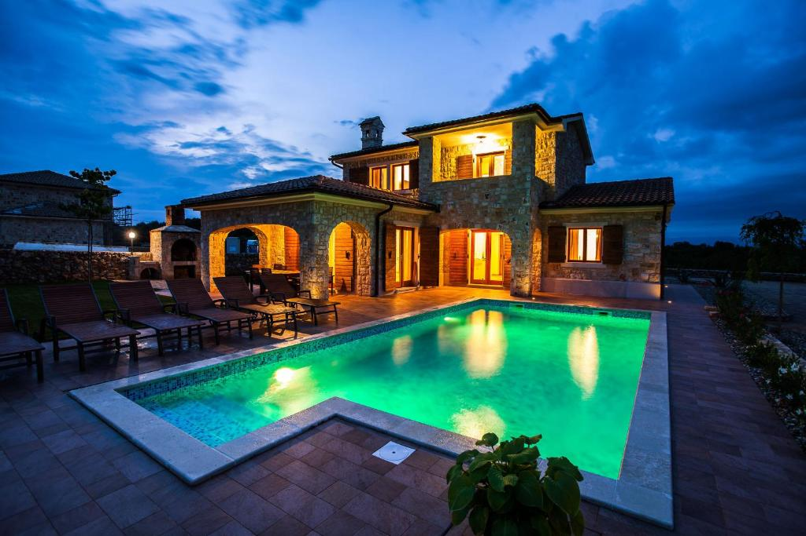

Aminess Lume Hotel:

Ispunjavate uvjete za popust u objektu Aminess Lume Hotel! Za ovu uštedu samo se trebate prijaviti. Hotel Aminess Lume smješten je u malom ribarskom naselju Brne na otoku Korčuli, a nudi vanjski bazen s terasom za sunčanje, restoran, klimatiziran smještaj i besplatni WiFi.Sve novo obnovljene sobe sadrže TV ravnog ekrana sa satelitskim programima, sef, minibar te vlastitu kupaonicu s tušem ili kadom, besplatnim kozmetičkim priborom i sušilom za kosu. Sve sobe nude pogled na more.
Ispred hotela smještena je nedavno preuređena plaža. Hotel Aminess Lume nalazi se na samo nekoliko koraka od šetnice uz more, gdje gosti mogu uživati u opuštajućim šetnjama okruženi borovom šumom. U blizini su dostupni sadržaji za ronjenje s maskom i disaljkom, vožnju kanuom, pješačenje, jedrenje na dasci, ronjenje i pecanje.
Ovaj objekt udaljen je 20 km od Korčule i luke u Veloj Luci. Na zahtjev i uz nadoplatu moguće je organizirati uslugu prijevoza iz trajektnih luka u Veloj Luci i Korčuli. Ovaj hotel dobitnik je domaćeg certifikata za ekološki osviješteno i održivo poslovanje.
Vila Mare:

Vila Mare sadrži vanjski bazen i opremu za roštilj te se nalazi u Komarni u Dubrovačko-neretvanskoj županiji, na 30 km od Međugorja. Mostar je udaljen 50 km. Objekt u ponudi ima besplatan WiFi i besplatno privatno parkiralište. Jedinice uključuju blagovaonicu i prostor za sjedenje s TV-om ravnog ekrana. Pojedine obuhvaćaju terasu i/ili balkon s pogledom na more. Sve jedinice imaju kuhinju s perilicom posuđa i hladnjakom. Gosti mogu koristiti ploču za kuhanje i električno kuhalo. Sve jedinice također sadrže vlastitu kupaonicu s kadom ili tušem. Dostupni su ručnici. Vila Mare u ponudi ima masažne tretmane. Gosti se mogu baviti raznim aktivnostima, poput jahanja te ronjenja s maskom i disaljkom. Vila Mare smještena je 32 km od Korčule. Najbliža Zračna luka Dubrovnik udaljena je 73 km od objekta..
Private Beach Apartment and rooms:

Objekt Private Beach Apartment and rooms nalazi se na 150 metara od plaže Žal, a nudi vrt, privatnu plažu, klimatiziran smještaj s popločanim dijelom dvorišta i besplatan WiFi.
Pojedine jedinice sadrže TV ravnog ekrana sa satelitskim programima, potpuno opremljenu kuhinju s hladnjakom te vlastitu kupaonicu s tušem i besplatnim kozmetičkim priborom.
U sklopu apartmana dostupna je oprema za roštilj. U objektu Private Beach Apartment and rooms moguće je dogovoriti najam bicikla, a gosti koji žele istražiti okolicu mogu uživati u pješačenju, ronjenju s maskom i disaljkom te vožnji bicikla. Plaža Istruga udaljena je 550 metara od objekta.
Parovima se posebno svidjela lokacija – ocijenili su je s 9,7 za svoje putovanje udvoje.